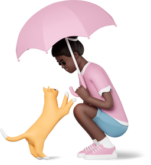

Encontrei um animal perdido
o que devo fazer?
Encontrar um animal perdido pode ser uma situação que toca o coração, tanto para o animal quanto para o proprietário.
É fácil se sentir comovido ao ver um amiguinho perdido e solitário, procurando por sua família.
Encontrei um animalzinhoComo eu sei se a pessoa é a dona mesmo?
Quando alguém aparecer na postagem dizendo ser dono do animal perdido, peça provas, como fotos que ele tenha com o animal antes de seu desaparecimento. "A maioria das pessoas guarda imagens da família com o pet em vários momentos. Essas fotos geralmente ficam no perfil".
Além disso, a reação do animal diante do suposto dono pode sinalizar se eles têm alguma intimidade: ir facilmente ao encontro da pessoa, abanar o rabo, lamber e fazer festa são sinais positivos.
Para a devolução, tente marcar o encontro em local público ou quando houver mais pessoas com você.
